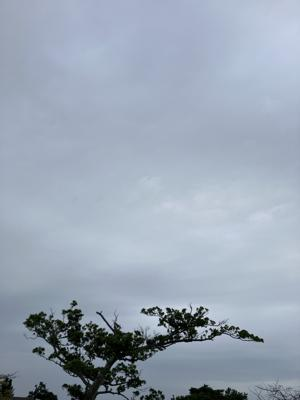
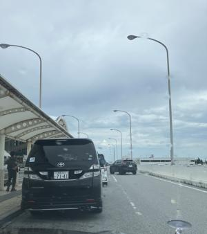

うるがいの話 ある日
最新: 飛行機の出発時刻【うるがいの話 ある日】とは 一日だけのプログです
『うるがいの話』の最新一日だけのプログで、通信料が少なく経済的だ。カニの画像をクリックすると全ての日付が載る『うるがいの話』サイトを表示します
|
|
【うるがいの話】 うるがい(ｳﾙｶﾞｲ urugai)とは、『もずくがに』の名前でとても大きくなります。 |
|---|---|
|
|
【カミマヤーの話】 猫のことを方言でマヤーといいます。カミマヤー（kamimayaa）とは、神の猫のことです。 |
|
【たながぁの音楽】 たながぁ（ﾀﾅｶﾞｰ tanagaa）とは手長えびのことで、何種類かあり大きいのは車 エビぐらいになります。 |

|
【ぶながぁの話】 ぶながぁ(ﾌﾞﾅｶﾞｰ bunagaa)とは、赤い髪の毛、赤い身体、そして身長は１ｍ２０ｃｍ ぐらい、川の蟹を食べているの目撃された。場所は沖縄県国頭郡大宜味村のと ある村僕の隣近所に住んでいる爺さんから、聞いた話です。 |
|
|
【ギーマの話】 ギーマ(giima)とは、山原の里山に咲くスズランに似た、 花を付けます。実は食べられます、 気が付くと口の周りが紫になっています。 |
2025年04月18日 (金）飛行機の出発時刻
16:48

コドモの飛行機の出発時刻は、１４時３０分。アパートへの迎えを
１１時３０分にとコドモが言う。ギリギリまで仕事をしたいらしい
。アパートから、空港まで３０分と見積もるとギリギリである。マ
いいか、乗り遅れた経験がある私は、若干の不安を感じる。
迎えに行く前に運行状況を確認すると、機材の到着遅れで２０分ほ
ど遅れた時刻に変更になっていた。車にコドモを乗せるとき、ギリ
ギリはネと一言いう。飛行機は、更におくれ１５時０５分に出発し
たようだ。
アパートから、１３時２９分に出発、１３時５１分に降ろす

国内線に搭乗する場合は、出発時刻の１時間前までに空港へ到着す
るのが安心です。（ウン、確かに）
【国内線】航空会社ごとの締め切り時間（２０２５年１月現在）
保安検査 ２０分前
搭乗口 １０分前